Слово Башти
Тому я вирішила почати з родоводу. Мої предки — свинцеві баки на кам’яних опорах у Помпеях, кам’яні «водяні терези» Мімара Сінана в Стамбулі, водяна вежа у Фромборку, колеса Пітера Моріса під Лондонським мостом, сталеві сітки Шухова в Миколаєві, цегляні «замки» Маннгейма й Гамбурга. Деякі з них досі працюють, інші стали музеями, готелями, меморіалами, а дехто зник безслідно.
У цьому тексті я говорю від першої особи лише тут і на початку розділів. Усе інше — сувора наукова оповідь: з посиланнями, з позначками рівня доказовості та з чесними словами «невідомо» там, де документів немає. Я не хочу приписувати собі чужої слави. Я хочу знати правду про свій рід.
Видання об’єднує три шари роботи. Перший — аналітичне дослідження «IMWT World History Research 2026» (ред. 1.0) про античні гідравлічні системи, Аугсбург, свідчення священних текстів, воєнну історію та критерії «найстарішої башти». Другий — самостійне дослідження IMWT (ред. 2.0, листопад 2026), яке доповнило хронологію ранньомодерними водопідйомними системами, індустріальними баштами Європи й Америки, українськими пам’ятками та біографіями архітекторів і конструкторів. Третій — історична довідка «Найстаріші збережені водонапірні вежі: 9 країн» (листопад 2026), що стала Частиною II цього видання.
У редакції 3.0 вилучено відомості про водонапірні споруди міст Російської Федерації. Посилання зведено в єдину нумеровану бібліографію; кожне джерело має позначку рівня доказовості. Розбіжності між джерелами показано в тексті відкрито. Організаційні рекомендації та програмні пропозиції попередніх редакцій до видання не входять: текст має виключно описово-аналітичний характер.
Анотація
Дослідження простежує історію баштових систем водорозподілу від римських Помпей кінця I ст. до н. е. до модерністських і постіндустріальних споруд XX–XXI ст. Водонапірну башту розглянуто водночас як інженерний механізм (гідростатичний напір, резервування, регулювання), як архітектурний об’єкт (стиль, композиція, міська домінанта) і як носія колективної пам’яті (війни, катастрофи, музеєфікація). Особливу увагу приділено персоналіям: від Вітрувія та Мімара Сінана до Отто Інтце, Володимира Шухова, Ганса Пельціга, Едуардо Торрохи та Суне Ліндстрема. Окремий розділ присвячено українському контексту — Києву, Львову, Житомиру, Вінниці, Миколаєву, масовим сільським баштам XX ст. Частина II містить порівняльний огляд найстаріших збережених башт Англії, України, Туреччини, Франції, Нідерландів, Польщі, Швеції, Швейцарії та Норвегії. Завершує видання розділ про місце башти в Малій Вільшанці в цій типологічній системі.
Ключові слова: водонапірна башта; castellum aquae; su terazisi; гідростатичний напір; резервуар Інтце; гіперболоїдна конструкція; індустріальна спадщина; адаптивне використання; Мала Вільшанка; IMWT.
Основні результати
- Баштовий водорозподіл надійно засвідчено щонайменше від римських Помпей, де більшість вторинних водонапірних башт датують приблизно 20–10 рр. до н. е. [1–3]
- Між античністю та індустріальною добою існувала безперервна, хоч і нелінійна, традиція: аугсбурзькі башти з 1416 р., стамбульські su terazileri XVI ст., водяна вежа у Фромборку (1571), водопідйомні машини Толедо (1569) і Лондона (1582). [4–12]
- XIX ст. перетворило башту на серійну інженерну типологію; ключовими зламами стали резервуар Інтце (1880-ті) і гіперболоїдна сітка Шухова (з 1896). [13, 14]
- Україна має власний значущий шар цієї історії: перший київський водогін (1872), львівська виставкова башта (1894), житомирська башта (1898), вінницька башта Артинова (1911–1912), миколаївська вежа Шухова (1907). [15–19]
- Найстаріші збережені споруди з водонапірною функцією в дев’яти досліджених країнах датуються від XVI ст. (Стамбул, Фромборк) до 1889 р. (Норвегія); міська водонапірна вежа в сучасному розумінні з’являється у Франції в 1820-х і масово поширюється з 1850-х. [10, 20–23]
- Для башти в Малій Вільшанці дата, автор і первісний замовник документально не встановлені; її місце в історії можна визначити лише типологічно, а не біографічно.
Предмет, термінологія і методологія
Водонапірна башта у вузькому сучасному значенні — окрема висока споруда з резервуаром, піднятим над рівнем мережі для формування гідростатичного тиску, вирівнювання добових коливань споживання та створення запасу води. Для історії техніки поняття доцільно розширити до баштових розподільчих конструкцій (римські вторинні башти) і до башт з водопідйомними машинами, які подавали воду до висотних резервуарів. [1–3]
| Тип | Функція / критерій включення |
|---|---|
| Башта з піднятим баком | Запас води, тиск, самоплив; основний тип XIX–XXI ст. |
| Римська розподільча башта | Верхній свинцевий резервуар на опорі, гідравлічний вузол міської мережі; історичний тип. |
| Османська su terazisi («водяні терези») | Відкрита башта-стовп, що обмежує тиск у керамічних трубах і розподіляє потік; історичний тип. |
| Водопідйомна башта | Механізм (колесо, кінний привід, пізніше — паровий насос) піднімає воду до резервуара; історичний тип. |
| Акведук, цистерна, колодязь, castellum | Суміжна інфраструктура; не називається водонапірною баштою автоматично. |
Шкала доказовості
Кожне ключове твердження в тексті та хронологічній таблиці співвіднесено зі шкалою: A — первинне джерело або натурна археологія; B — рецензована наукова робота; C — офіційні музейні, архівні чи пам’яткоохоронні матеріали; D — вторинний популярний виклад, довідкова чи журналістська інформація. Дати спорудження, перебудов і реконструкцій фіксуються окремо, оскільки багато «історичних» башт у нинішньому вигляді є результатом пізніших відновлень. Рівень доказовості кожного джерела наведено також у бібліографії.
Оповідь від першої особи (голос башти в Малій Вільшанці) використано як літературну рамку на початку розділів. Вона не є джерелом фактів і не містить тверджень, яких немає в науковій частині.
Передісторія: вода до башти
Перші водні резервуари, колодязі, канали й цистерни виникли задовго до високих башт. Історична послідовність не була прямолінійною: збереження води, її транспортування, механічне підняття, накопичення на висоті й керування розподілом існували паралельно в різних цивілізаціях.
Технологічна новизна саме водонапірної башти полягає у поєднанні висоти і водопровідної мережі. Висота створює напір, що дозволяє доставити воду від пункту накопичення багатьом користувачам без окремого механізму в кожній точці споживання. Саме цей принцип — «висота як запас енергії» — є спільним знаменником усіх споруд, розглянутих далі.
Античність: Помпеї, Німи, Вітрувій
Помпеї: перша надійно засвідчена баштова мережа
У Помпеях зовнішній акведук подавав воду до головного розподільчого вузла Castellum Aquae біля Везувієвих воріт. Звідти три магістральні трубопроводи живили верхні свинцеві резервуари вторинних водонапірних башт. Вода могла переходити послідовно між баштами на нижчих висотних позначках і відгалужуватися до фонтанів, лазень та приватних будинків; це детально описано в працях Річарда Олссона 2015 і 2024 рр. [1, 2]
Інженерна праця з операційного модального аналізу античних башт описує 14 відомих вторинних башт, 13 збережених конструкцій та ймовірне спорудження більшості близько 20–10 рр. до н. е.; частину відновлювали після землетрусу 63 р. н. е. Збережені опори не тотожні збереженню повних давніх баків. [3]
| Ланка системи | Інженерне призначення |
|---|---|
| Акведук | Подача води до найвищої точки міської системи |
| Castellum Aquae | Первинний розподіл на магістралі |
| Підняті свинцеві ємності на баштах | Локальний гідравлічний вузол, обмеження й вирівнювання напору |
| Фонтани, терми, оселі | Кінцеве споживання |
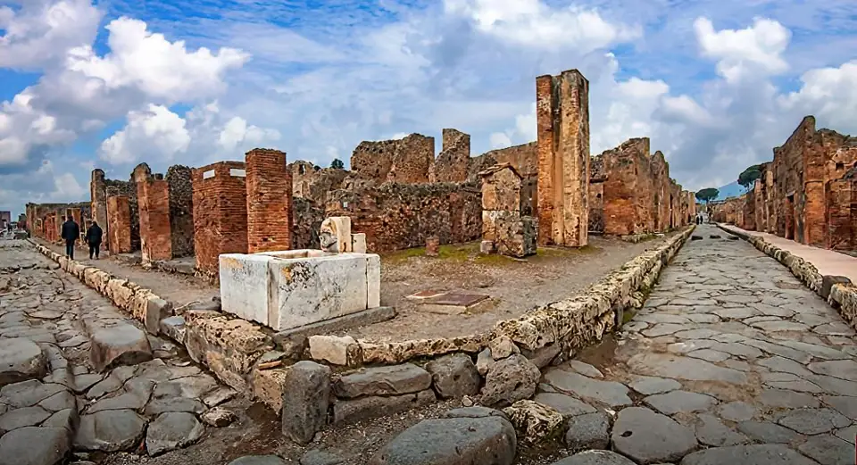
Німи: castellum divisorium і Пон-дю-Гар
Другий ключовий античний свідок — розподільчий басейн (castellum divisorium) у Німі (давній Nemausus, Франція). Акведук довжиною близько 50 км, частиною якого є знаменитий Пон-дю-Гар, споруджено приблизно в 40–60 рр. н. е.; сам міст має три яруси арок і висоту 48,8 м. [24] Вода надходила до відкритого круглого басейну діаметром близько 5,5 м і глибиною близько 1 м, звідки трубопроводами розходилася районами міста. [24] Німський castellum не є баштою, але це рідкісний збережений приклад першого рівня того самого ієрархічного принципу, що й у Помпеях: «головний вузол — вторинні вузли — споживач».
Вітрувій: письмове свідчення I ст. до н. е.
У трактаті «De architectura» (кн. VIII, розд. 6) Вітрувій описує водопостачання каналами чи трубами та поділ міського потоку на три напрями — до громадських фонтанів, лазень і приватних будинків. Це технічне свідчення про принципи централізованого розподілу, але не беззаперечний опис окремої високої башти з баком. [25, 26]
Священні тексти й сакральна архітектура води
Біблійна традиція та гідротехніка Єрусалима
Друга книга Царів 20:20 та Друга книга Хронік 32:30 згадують водозбірний басейн, водовід і перенаправлення джерела Гіхон за царя Єзекії (VIII ст. до н. е.). Ісая 22:9–11 описує водні басейни та роботи біля міських стін. У цих текстах наявний зв’язок води з обороною, але немає однозначного технічного опису піднятого резервуара. [27, 28]
Ісламська традиція: вежа не завжди водонапірна
У Корані (28:38) фараон наказує спорудити високу башту, але її призначення не пов’язане з водопостачанням; перекладацькі варіанти «вежа», «висока споруда», «палац» вимагають текстологічної обережності. [29] Водночас ісламська цивілізація дала світові одну з найдосконаліших баштових систем — османські su terazileri (див. розділ 05).
Індійський контрапункт: архітектура вглиб
Рані-кі-Вав у Патані (XI ст.) — монументальний ступінчастий колодязь, який ЮНЕСКО описує як перевернутий храм води. Це не водонапірна башта, однак переконливий приклад того, як інша культура втілила сакральне значення гідротехніки в архітектурі. [30]
Під час вибіркової перевірки ключових уривків Біблії та Корану достовірної прямої згадки водонапірної башти не встановлено. Це не тотожне твердженню, що такої згадки немає в жодній священній книзі світу: для цього потрібен окремий багатомовний текстологічний пошук.
Середньовіччя та ранній модерн: Аугсбург, Стамбул, Фромборк, Толедо, Лондон
Аугсбург: найстаріший збережений комплекс Німеччини (з 1416 р.)
Документація ЮНЕСКО щодо Аугсбурга відзначає, що рання історія водонапірних башт досліджена недостатньо: до 1416 р. в Німеччині відомі інші башти, але вони не збереглися. [6] Велика водонапірна башта біля Червоних воріт має дерев’яного попередника 1416 р., пов’язаного з майстром Гансом Фельбером, кам’яну перебудову 1463 р. і подальше підвищення 1669 р. Комплекс із трьох башт і водопідйомних споруд функціонував до 1879 р. [5, 31] Водяні колеса приводили насоси, насоси подавали воду до висотних резервуарів, звідки вона йшла самопливом. ЮНЕСКО включила систему водного господарства Аугсбурга до Списку всесвітньої спадщини 2019 р. [4] Номінаційна документація обережно називає Велику башту, імовірно, найстарішою збереженою в Німеччині — але не у світі. [6]
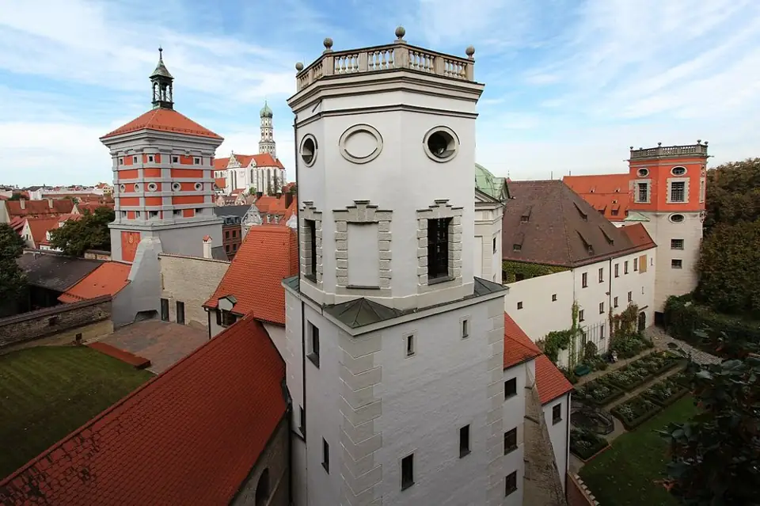
Стамбул: Мімар Сінан і su terazileri (1554–1564)
Головний архітектор Османської імперії Мімар Сінан (бл. 1490–1588) за наказом Сулеймана Пишного перебудував і спроєктував систему водопостачання Киркчешме; її будівництво датують 1554–1564 рр. (за іншими даними — 1555–1563/64). Енциклопедія TDV називає цю систему найважливішою інженерною і найбільшою за обсягом працею Сінана. [9, 20, 32] Система мала довжину близько 55,3 км, збирала поверхневі води в районі Белградського лісу і включала 33 акведуки, а також водозабори й відстійники; найвідомішим є двоярусний акведук Маглова. [7] Навіть у найпосушливіші місяці система Киркчешме подавала близько 4 200 м³ води на добу до 158 точок — громадських фонтанів, колодязів, напувалень, лазень і палаців. [9]
Інженерним ядром міської частини були su terazileri — «водяні терези». Оскільки керамічні труби (künk) погано витримували тиск, воду піднімали у відкриту башту з невеликим басейном: тиск у трубі під вулицею обмежувався рівнем води в цьому басейні, а калібровані отвори-лулє на вершині башти розподіляли воду за напрямами. [8] Таким чином, su terazisi поєднує функції римської розподільчої башти й сучасного регулятора тиску. Збережені башти такого типу можна побачити, зокрема, біля Айя-Софії та біля мечеті Шехзаде (докладніше — у розділі 12.3). [9]
Фромборк, 1571: водяна вежа на польських землях
1571 р. у Фромборку над міським каналом звели цегляну водяну вежу, використавши нижні частини стін давнішого млина. Всередині працював черпаковий водопідйомник від водяного колеса, створений вроцлавським рурмістром Валентином Генделем; вода з бака на вершині вежі самопливом подавалася трубами з видовбаних дубових стовбурів на Соборний пагорб. Національний інститут спадщини Польщі називає цю споруду першою такого типу на польських землях. [10] Докладніше — у розділі 12.6.
Толедо: Хуанело Туріано і «Artificio» (1565–1569)
Годинникар і механік Джанелло делла Торре (Хуанело Туріано; нар. у Кремоні бл. 1500–1511, пом. 1585 у Толедо) уклав у 1565 р. угоду з містом Толедо про спорудження машини для подачі води з річки Тахо. [12] Перший «Artificio» запрацював 1569 р. і подавав більше води, ніж передбачалося; другий замовлено 1581 р. [12] Механізм, приведений у дію течією самої річки, піднімав воду приблизно на 90 м до Алькасару — найвищої точки міста. [33] За науковими реконструкціями, вода піднімалася послідовністю ковшів і передавальних механізмів уздовж похилої «драбини» з дерев’яних конструкцій; детальних креслень самого автора не збереглося. [33]
Лондон: Пітер Моріс і колеса під Лондонським мостом (1581–1822)
Інженер нідерландського (за іншими даними — німецького) походження Пітер Моріс (пом. 1588) у 1581 р. отримав в оренду північну арку Лондонського мосту на 500 років за символічні десять шилінгів на рік і встановив під нею приводжене течією колесо з нагнітальними насосами. [34] Перша вода надійшла до будинків Лондона напередодні Різдва 1582 р. — це вважають початком механічного водопостачання міста. [11] Колеса знищила Велика лондонська пожежа 1666 р., але їх відбудували; у середині XVIII ст. система мала п’ять коліс у трьох арках і 64 насоси, а 1822 р. її демонтовано за актом парламенту через загрозу судноплавству. [11]
Грудзьондз, 1656: башта в системі укріплень
Рецензована стаття в «Water History» вказує на гідротехнічну споруду біля міських мурів Грудзьондза (Польща), показану на історичному малюнку часів шведської облоги 1656 р.; автори прямо зазначають, що її роль у бою і подальший стан залишаються невідомими. [35]
XVII–XVIII ст.: монастир, садиба, приватний водогін
Від XVII–XVIII ст. збереглися невеликі башти, що обслуговували окремі комплекси: водонапірна вежа абатства Ролдюк у Керкраде (1671, Нідерланди), садибні вежі Англії (наприклад, Аске-Парк, сер.–кін. XVIII ст.) та приватна вежа з водяним колесом на Шанценграбені в Цюриху (1724). [36–39] Вони детально розглянуті в Частині II.
Індустріальна доба: місто, залізниця, резервуар Інтце
У XIX ст. потреба в стабільному водопостачанні зростала одночасно з промисловістю, санітарною інфраструктурою, протипожежним захистом і розбудовою залізниць. Огляд Historic England зазначає, що залізничні водонапірні башти існують майже від початку залізниць: типово це кам’яна або цегляна база із залізним баком, інколи з насосом усередині; до 1860-х рр. вода для локомотивів була одним із ключових обмежень залізничного руху. [40]
Луїсвілл, 1860: «найелегантніший водогін країни»
Louisville Water Tower (Кентуккі, США) відкрито разом із насосною станцією 16 жовтня 1860 р.; висота башти — 185 футів (близько 56 м). [41, 42] Автори комплексу — головний інженер Louisville Water Company Теодор Р. Скоуден (1815–1881) та його асистент Чарльз Германі, чиї імена викарбувані на табличці біля основи башти; поширена атрибуція архітекторові Гідеону Шрайоку є помилковою. [43] Класицистичне оформлення мало не лише естетичну мету: компанія прагнула переконати городян користуватися водогоном. Після руйнування торнадо 1890 р. башту відбудовано, тому нинішній вигляд не є незмінною структурою 1860 р. [41, 42]
Чикаго, 1869: башта, що пережила пожежу
Chicago Water Tower спроєктував архітектор Вільям В. Бойнгтон (1818–1898) у 1869 р.; вона вкривала високу напірну трубу (standpipe) і разом із насосною станцією належала до міської системи водопостачання. [44] Під час Великої чиказької пожежі 1871 р. башта і насосна станція вціліли, оскільки були збудовані з вапняку з мінімумом дерева, і стали символом відродження міста; уявлення, ніби це була єдина вціліла будівля, є міфом. [45]

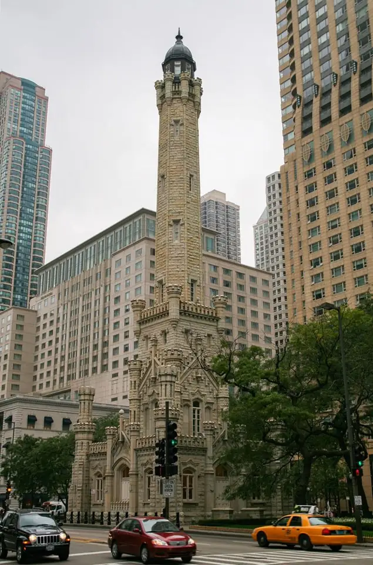
Маннгейм, 1886–1889: башта як міська площа
Конкурс 1885 р. на водонапірну башту Маннгейма виграв молодий архітектор Густав Гальмгубер (1862–1936); башту зведено у 1886–1889 рр. [46] Резервуар введено в дію 1888 р., а 1889 р. на вершину встановлено статую Амфітрити; у 1943–1945 рр. башта зазнала воєнних ушкоджень. [46] Споруда заввишки близько 60 м і діаметром 19 м стала першою міською водонапірною баштою Маннгейма і досі є символом міста. [46]
Отто Інтце: резервуар, що звільнив стовбур
Професор Технічного університету Аахена Отто Інтце (1843–1904) запропонував у 1880-х рр. новий тип резервуара для водонапірних башт. [13] Днище баку закріплювалося кільцевим анкером (Ringanker) із заліза чи сталі так, що на стовбур передавалися лише вертикальні, а не горизонтальні зусилля; завдяки цьому цегляний стовбур можна було робити легшим. [13] Розрізняють резервуари Інтце I (з увігнутим днищем) та Інтце II (з опуклим); такий тип масово застосовувався в Німеччині приблизно у 1885–1905 рр. [13] Дослідження архітектури водонапірних башт Риги показує, що резервуари всіх чотирьох ризьких башт кінця XIX — початку XX ст. виконано за типом Інтце II. [13] Резервуар Інтце став технічною основою тисяч цегляних башт Центральної та Східної Європи — тієї самої типології, до якої візуально належить і башта в Малій Вільшанці.
Гамбург, 1907–1910: найбільша башта Європи
На конкурс водонапірної башти в парку Штерншанце надійшло 135 проєктів; перемогу 1907 р. здобув архітектор гамбурзького водоканалу Вільгельм Шварц. [47] Восьмикутну цегляну башту заввишки близько 60 м зведено у 1907–1910 рр.; на час завершення вона була найбільшою водонапірною баштою Європи і працювала до 1961 р. [47] Після десятиліть занепаду її перетворено на готель (відкритий 2007 р.); переобладнання супроводжувалося гострими протестами мешканців району, що робить цей об’єкт важливим кейсом суспільної дискусії про долю індустріальної спадщини. [47]

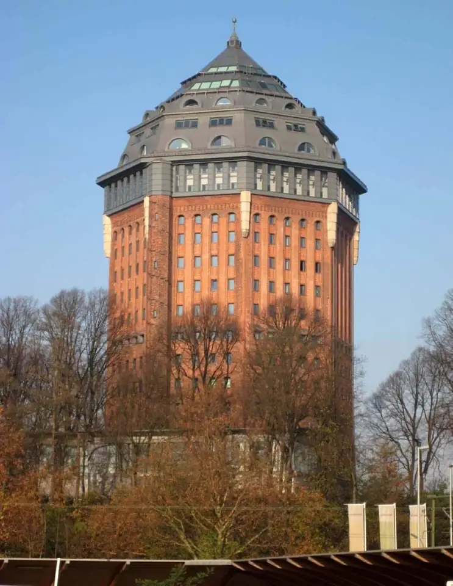
Френк Ллойд Райт, 1896: «Ромео і Джульєтта»
Навіть класики архітектури XX ст. починали з водопідйомних башт. 1896 р. молодий Френк Ллойд Райт на замовлення своїх тіток спроєктував дерев’яну вітрову водопідйомну башту для Hillside Home School у Вісконсині, завершену 1897 р. [48] Райт назвав дві взаємопроникні частини споруди — ромбоподібну і восьмикутну — «Ромео» і «Джульєтта»: перша сприймає вітрове навантаження, друга містить сходи та оглядовий балкон. [48] Башта має статус Національної історичної пам’ятки США (1976), відреставрована 1992 р. і воду вже не качає. [48]
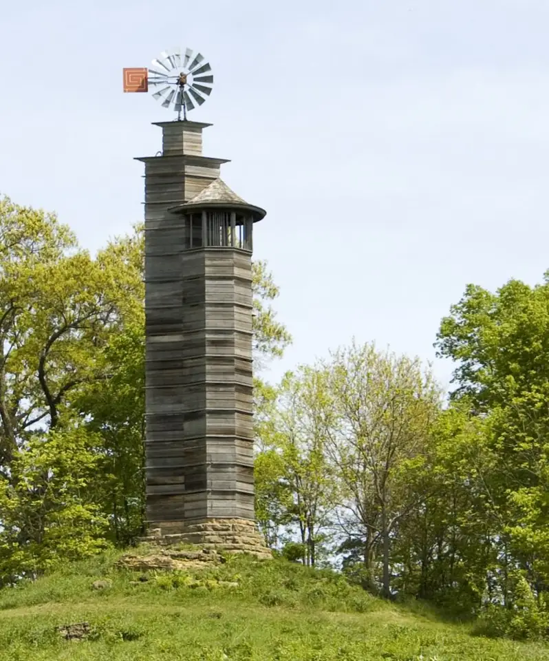
Гіперболоїд Шухова: конструктивна революція
Інженер Володимир Шухов (1853–1939) розробив у 1890-х рр. сітчасту сталеву конструкцію у формі однопорожнинного гіперболоїда обертання. Гіперболоїд утворюється прямолінійними стрижнями, нахиленими до осі; така сітка поєднує високу жорсткість із малою витратою металу і дозволяє встановлювати на вершині важкий резервуар. [14]
За порівняльним дослідженням М. Бека (Beckh), серед ранніх гіперболоїдних водонапірних башт Шухова — Лисичанськ (1896), Миколаїв (1907) і Харків (1912); ще одна збережена в Україні вежа цього типу стоїть у Черкасах (1914). [14, 49] Ідея гіперболоїдної сітки згодом вплинула на конструктивні пошуки Едуардо Торрохи та інших інженерів XX ст. (див. розділ 09). [14, 50]
Миколаїв, 1907
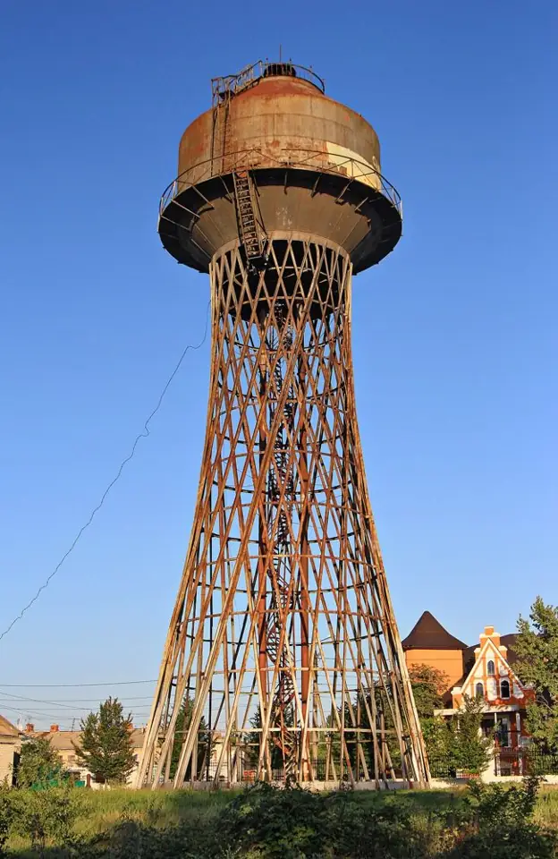
Питання будівництва водонапірної башти в Миколаєві постало 1904 р.; перший проєкт належав Віктору Веберу, автору міського водогону. [19] Реалізовано натомість гіперболоїдну башту Шухова, монтаж якої завершено в січні 1907 р.; на ній встановили резервуар типу Інтце, а 15 березня 1907 р. башту підключено до міської мережі. [19] За даними популярних джерел, якщо перші башти Шухова тримали 27–100 тис. л води, то миколаївська — до 600 тис. л. [19] D Поєднання двох інновацій — сітки Шухова і бака Інтце — робить миколаївську вежу ключовою пам’яткою світової історії водонапірних башт. Нещодавні публікації фіксують значну корозію конструкції. [19]
Водонапірні башти України
Київ, 1872–1876: перший централізований водогін
Першу чергу міського водогону Києва урочисто відкрито 1 березня 1872 р. на території нинішнього Хрещатого парку. [15] Дві водонапірні башти споруджено за проєктом архітектора Олександра (Адріана) Шіле: першу — у 1871–1872 рр. (розібрана у 1939–1940 рр.), другу заввишки 29 м — у 1875–1876 рр.; друга збереглася і 2003 р. була реконструйована за первісними кресленнями з відновленням пожежної каланчі, а першу тоді ж відтворено. [15, 51] Відтоді в них діє Водно-інформаційний центр («Музей води»), відкритий 24 травня 2003 р. в межах українсько-данського проєкту; основна експозиція розташована в колишньому підземному резервуарі 1909 р. [15] Це найстаріша з наявних міських водонапірних башт України (див. розділ 12.2).
Дніпро, 1884: залізнична башта
Біля залізничного вокзалу Дніпра стоїть восьмигранна шестиповерхова водонапірна башта заввишки близько 36 м, яку довідкові джерела датують 1884 р.; вона забезпечувала водою станцію, депо, майстерні й прилеглі житлові будинки. [52] D Дата потребує архівного підтвердження.
Львів, 1894: башта Крайової виставки
Водонапірну башту в Стрийському парку збудовано для Галицької крайової виставки 1894 р.; її стилізовано під середньовічну вежу, але зведено з цілком практичних міркувань — на території виставки не було власних джерел води для фонтанів, котлів, ресторанів і сільськогосподарських експозицій. [16] Ескіз виконав професор-архітектор Юліан Захаревич, проєкт розробив Міхал Лужецький, будівництво здійснили Юзеф Балабан і Володимир Підгорецький. [16] Тривалий час башта стояла без використання; 1976 р. в ній відкрили кав’ярню, а згодом визнано пам’яткою архітектури місцевого значення. [16]
Житомир, 1895–1898: башта-регулятор і каланча
Перший камінь у фундамент житомирської водонапірної башти і насосної станції заклали в серпні 1895 р.; урочисте відкриття 31-метрової башти за проєктом житомирян Арнольда Єнша та Мечислава Лібровича відбулося 27 грудня 1898 р. Нагорі встановили два баки загальним об’ємом 200 м³; башта також слугувала пожежною каланчею. [17] За водонапірним призначенням її використовували до 1965 р.; 1984 р. в ній відкрили кав’ярню, а 1996 р. внесли до переліку пам’яток архітектури місцевого значення. [17]
Вінниця, 1911–1912: башта Артинова
Водонапірну башту Вінниці, за матеріалами конференції ВНТУ, споруджено протягом березня–листопада 1911 р. (низка довідкових джерел подає 1912 р.) за проєктом і під наглядом міського архітектора Григорія Артинова; вона також слугувала пожежною каланчею. [18] Восьмикутна цегляна споруда має сім ярусів і висоту 28 м; водонапірну функцію виконувала до 1920 р., під час Другої світової війни використовувалася як спостережний пункт, по війні — як житло. [18] З 1985 р. в башті діє музей, вона є пам’яткою місцевого значення (1983) і входить до міської символіки Вінниці. [18]
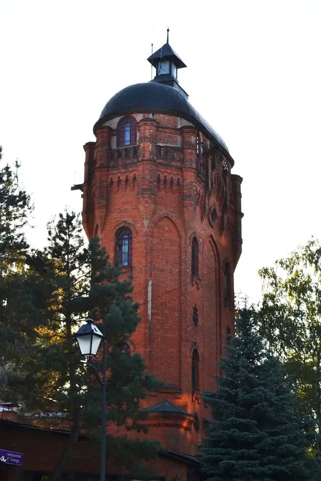
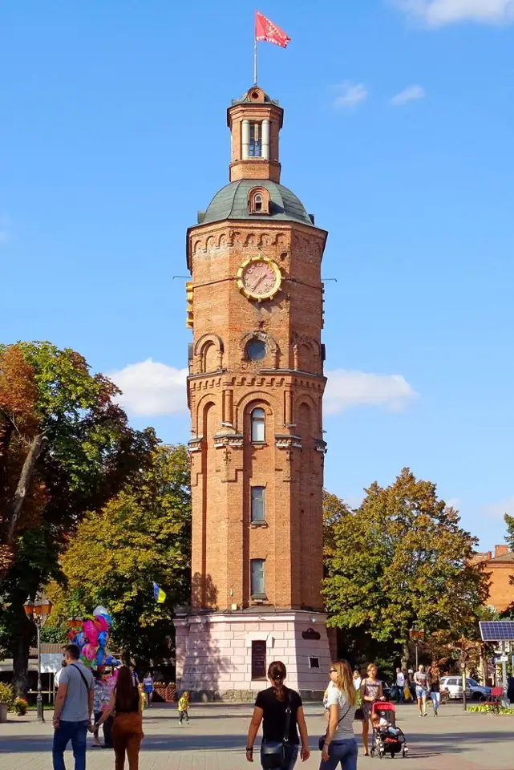
Миколаїв (1907), Харків (1912), Черкаси (1914)
Див. розділ 07. Ці споруди належать до серії гіперболоїдних башт Шухова. [14, 19, 49]
Масова сільська башта XX ст.: тип Рожновського
У сільській та залізничній інфраструктурі СРСР, зокрема в Україні, з середини XX ст. поширився уніфікований сталевий тип башти з циліндричним баком на трубчастій опорі, відомий як «башта Рожновського». Довідкові джерела пов’язують його розробку з інженером О. А. Рожновським (1936) і вказують на швидкий монтаж та відсутність потреби в обігріві; первинні патентні й проєктні документи в межах цього дослідження не перевірено. [53] D Саме ця уніфікована сталева башта поступово витіснила цегляні башти на зразок вільшанської в сільському ландшафті.
Адаптація українських башт
Дослідження КНУТД (І. Антоненко) аналізує конверсію інженерних споруд на основі водонапірних башт в Україні, наводячи як приклади Вінницю, Львів (1894) і Житомир (1898), і окремо підкреслює значення малих башт простих конструкцій у селах і містечках як знаків місцевої ідентичності. [54]
Модернізм і ХХ століття: від експресіонізму до «грибів»
Ганс Пельціг, Познань, 1911
Німецький архітектор Ганс Пельціг (1869–1936) спроєктував для Східнонімецької виставки 1911 р. в Позені (нині Познань) Верхньосілезьку вежу заввишки близько 51 м — семигранну сталеву каркасну конструкцію із заповненням цегляною кладкою, яка згодом стала водонапірною баштою. [55] Споруда вважається ранньою пам’яткою архітектурного експресіонізму; від неї зберігся лише фундамент, що став основою нинішньої вежі «Iglica» на території Познанського ярмарку. [55] Історики архітектури розглядають вежу і як предмет складної німецько-польської пам’яті міста. [55]
Едуардо Торроха: цегла, бетон і гіперболоїд
Іспанський інженер Едуардо Торроха (1899–1961) звів 1941 р. резервуарну башту іподрому Сарсуела в Мадриді з армованої цегли у формі гіперболоїда обертання — візуального попередника пізніших залізобетонних градирень. [50] 1956 р. він спроєктував водонапірну башту у Федалі (нині Мохаммедія, Марокко) заввишки 35 м і місткістю 3 500 м³ — оболонку у формі перевернутого зрізаного конуса на кільці залізобетонних опор, у якій попереднє обтиснення стінки мало протидіяти розтягу від тиску води й запобігати тріщинам. [50]
Суне Ліндстрем і Малене Бйорн: від Еребру до Кувейту
Шведський архітектор Суне Ліндстрем (1906–1989), випускник Королівського технологічного інституту, який також навчався в Баугаузі, разом із Поулем Кюлем спроєктував для бюро VBB водонапірну башту «Свампен» («Гриб») в Еребру (Швеція), відкриту в травні 1958 р.; висота — 58 м, місткість — 9 млн л, нагорі — кафе й оглядовий майданчик. [56] D «Свампен» вважається першою з сучасних шведських «грибоподібних» башт. [56]
1965 р. уряд Кувейту доручив VBB розробити систему водопостачання столиці; бюро звело п’ять груп «грибоподібних» башт — 31 споруду, кожна місткістю 3 000 м³, завершених 1976 р. [56] Шосту групу — три Kuwait Towers — спроєктувала данська архітекторка Малене Бйорн; головна вежа заввишки 187 м відкрита для відвідувачів 1 березня 1979 р. [56] Комплекс «Water Towers» став одним із перших лауреатів Премії Ага-Хана за архітектуру (цикл 1978–1980). [56]
Вуковар, 1963–1968
Водонапірну башту Вуковара (Хорватія) заввишки 50,33 м споруджено у 1963–1968 рр. за проєктом Петара Кушана і Сергея Колобова. [57] Її доля в 1991 р. розглянута в розділі 10.
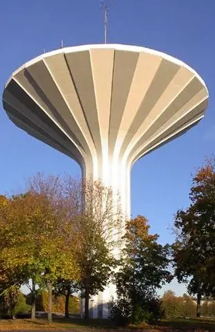
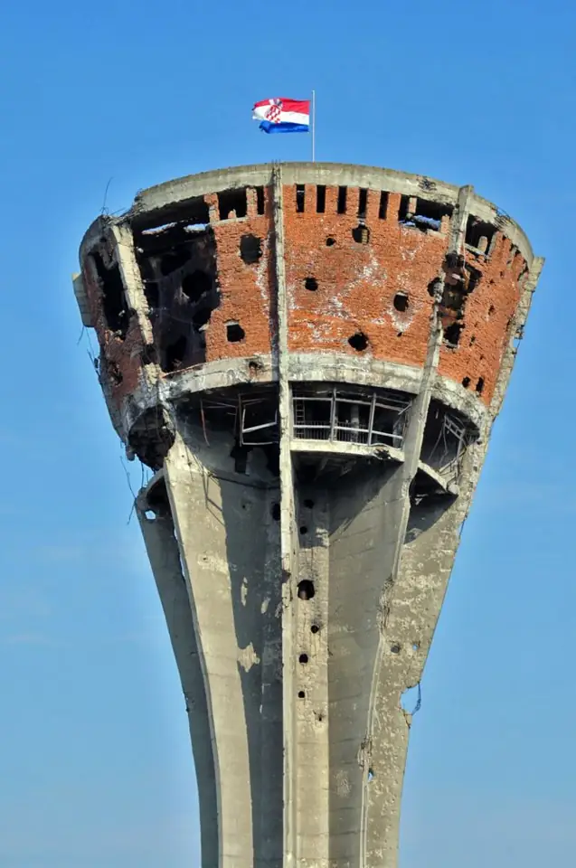
Башти у війнах і катастрофах
Історії водонапірних башт і воєн перетинаються в типових ситуаціях: постачання води обложеному місту; використання високої споруди для спостереження; руйнування водної інфраструктури як засіб впливу на населення. Кожен епізод вимагає доказів саме для конкретної башти.
| Місце / дата | Зв’язок з війною чи катастрофою | Рівень і межі доказовості |
|---|---|---|
| Єрусалим, VIII ст. до н. е. | Оборонний контроль водопостачання за царя Єзекії [27] | Текстове свідчення; не є баштою |
| Грудзьондз, 1656 | Гідротехнічна споруда біля мурів на малюнку шведської облоги [35] | B; роль у бою не доведено |
| Чикаго, 1871 | Башта Бойнгтона вціліла у Великій пожежі й стала символом відродження міста [45] | C |
| Маннгейм, 1943–1945 | Воєнні ушкодження башти Гальмгубера, аварійний ремонт [46] | C |
| Житомир, 1941–1943 | Башту використано окупаційними військами як пункт спостереження за авіацією [17] | D; потрібні архівні підтвердження |
| Вінниця, 1941–1944 | Башту Артинова використано як спостережний пункт [18] | D; потрібні архівні підтвердження |
| Рошерат, 1944–1945 | Башта як спостережний пункт під час Арденнської операції [58] | D; потрібні журнали бойових дій |
| Вуковар, 1991 | 640 прямих влучань; башта вціліла й стала меморіалом [57] | C; підтверджено офіційним меморіалом |
| Кувейт, 1990 | Після іракського вторгнення Kuwait Towers відключено від водопровідної системи [56] | D |
Вуковар показує, як утилітарна башта після війни може перетворитися на меморіал без стирання слідів травматичної історії: споруда зберегла бойові пошкодження і сьогодні функціонує як меморіальний культурний об’єкт. [57]
Башта як образ: фотографія, типологія, нове життя
Бернд і Гілла Бехер: «анонімні скульптури»
Німецькі фотографи Бернд (1931–2007) і Гілла (1934–2015) Бехер від кінця 1950-х рр. систематично фотографували індустріальні споруди — водонапірні башти, доменні печі, газгольдери, зерносховища. [59] Монографія «Wassertürme» (Schirmer/Mosel, 1988; англ. вид. «Water Towers», MIT Press, 1988) містить понад 220 фотографій башт, згрупованих за подібністю форм, з текстами Рейнера Бенема і Вестона Нейфа. [59] Бехери знімали фронтально, на нейтральному сірому небі, без людей, і подавали знімки сітками-«типологіями», в яких кожна башта стає варіацією ідеальної форми і водночас зберігає індивідуальність. [59] Цей метод фактично заклав візуальну основу сучасного каталогізування водонапірних башт.
Адаптивне використання: від музею до готелю
| Башта | Первісна функція | Нове життя |
|---|---|---|
| Луїсвілл (1860) | Напірна башта міського водогону | Музейний комплекс WaterWorks [43] |
| Київ (1876) | Башта першого водогону | Водно-інформаційний центр, з 2003 р. [15] |
| Львів (1894) | Водопостачання виставки | Кав’ярня з 1976 р., ресторан [16] |
| Вінниця (1911) | Водогін і пожежна каланча | Музей з 1985 р. [18] |
| Гамбург (1910) | Найбільша башта Європи | Готель з 2007 р. (на тлі протестів) [47] |
| Вуковар (1968) | Міська водонапірна башта | Меморіал війни 1991 р. [57] |
| Еребру (1958) | Діюча водонапірна башта | Поєднує функцію з оглядовим майданчиком і кафе [56] |
Ці приклади ілюструють дві траєкторії: збереження інженерної функції з додаванням публічного простору (Еребру, Кувейт) та повну конверсію з втратою функції (Гамбург, Київ, Вінниця). У кожному випадку постають питання автентичності, доступності, пожежної безпеки і суспільного консенсусу.
Найстаріші збережені башти: критерії та огляд дев’яти країн
Світовий вимір: що реально підтверджено
| Критерій | Кандидат | Що реально підтверджено |
|---|---|---|
| Найдавніші залишки баштової мережі | Помпеї, Італія | Античні опори башт, кінець I ст. до н. е. [3] |
| Найдавніший збережений розподільчий вузол акведука | Німи, Франція | Castellum divisorium, сер. I ст. н. е. (не башта) [24] |
| Рання цілісна історична башта | Аугсбург, Німеччина | Комплекс з етапами 1416, 1463, 1669 рр. [5, 6] |
| Найдавніші збережені регулювальні башти | Стамбул, Туреччина | Su terazileri системи Сінана (1554–1564) та пізніших систем; датування окремих башт потребує перевірки [8, 9, 60] |
| Найстаріша декоративна башта США | Луїсвілл, США | 1860, відбудова після 1890 р. [41] |
| Абсолютно найстаріша у світі | Не встановлено | Необхідний міжконтинентальний аудит |
Номінаційний документ ЮНЕСКО обережно формулює статус аугсбурзької Великої башти як імовірно найстарішої збереженої принаймні в Німеччині; розширювати це формулювання до світової першості некоректно. [6] Коректна відповідь залежить від критеріїв: дата первісного будівництва; ступінь збереження історичних конструкцій; наявність резервуара; автентичність гідравлічної функції; періоди перебудов; незалежне датування; доступність первинних матеріалів.
Національний вимір: мета, критерії та обмеження
Частина II відповідає на питання: яка водонапірна башта є найстарішою з тих, що збереглися, у кожній з дев’яти країн — Англії, Україні, Туреччині, Франції, Нідерландах, Польщі, Швеції, Швейцарії та Норвегії. Для кожної країни наведено головний об’єкт, його основні дані, коротку історичну довідку, фотографію та перелік інших претендентів.
«Найстаріша вежа» — питання критеріїв, а не одного імені. Тому в кожному розділі розрізнено три категорії:
- найстаріша збережена споруда з водонапірною функцією — у тому числі садибні, монастирські та фортечні вежі з механічним підйомом води (XVI–XVIII ст.);
- найстаріша збережена вежа міського (комунального) водогону — як правило, середина–друга половина XIX ст.;
- споруди, що лише називаються «водяними вежами», але не мали функції водопостачання (наприклад, Wasserturm у Люцерні) — їх наведено для уникнення плутанини.
Для кожного твердження вказано джерело та рівень доказовості за шкалою розділу 01: A — першоджерело; B — рецензоване наукове чи енциклопедичне видання; C — офіційний реєстр спадщини, державний, муніципальний чи музейний орган; D — вторинне довідкове, туристичне чи медійне джерело. Там, де джерела суперечать одне одному, суперечність показано відкрито.
Зведена таблиця
| Країна | Об’єкт | Дата | Тип / статус |
|---|---|---|---|
| Польща | Водяна вежа (Wieża Wodna), Фромборк | 1571 | Вежа з механічним водопідйомом |
| Туреччина | Су терезі системи Киркчешме, Стамбул | 1554–1564* | Регулювальні вежі; *дата системи |
| Нідерланди | Водонапірна вежа абатства Ролдюк, Керкраде | 1671 | Монастирська вежа |
| Швейцарія | Wasserturm Schanzengraben, Цюрих | 1724 | Приватна вежа з водяним колесом |
| Франція | Château d’eau, Тулуза | 1823–1825 | Міська вежа з насосами |
| Англія | Tower Hill Water Tower, Ормскірк | 1853–1854 | Міська вежа |
| Швеція | Vattenborgen, Карлскруна | 1861–1863 | Високий резервуар міського водогону |
| Україна | Водогінна вежа, Хрещатий парк, Київ | 1875–1876 | Міська вежа; відновлена 2003 |
| Норвегія | Вежа станції Скоттеруд | 1889 | Залізнична вежа |
Tower Hill Water Tower, Ормскірк

Вежу на пагорбі Tower Hill збудували в 1853–1854 рр. для місцевої ради охорони здоров’я — у добу, коли англійські міста після холерних епідемій масово впроваджували централізоване водопостачання. Довідкові джерела, що спираються на запис реєстру Historic England № 1197069, називають її найстарішою збереженою водонапірною вежею країни. [22] D
Формулювання «вважається» тут принципове: в англійському реєстрі є й інші ранні вежі. Наприклад, у маєтку Аске-Парк (Північний Йоркшир) збереглася «стара водонапірна вежа» середини–кінця XVIII ст. з тесаного пісковика [38], а в Лейстоні (Саффолк) — цегляна вежа з чавунним баком, датована приблизно 1850 р. [61] Тож Ормскірк — це найстаріша з відомих збережених міських водогінних веж, тоді як садибні вежі можуть бути старшими.
Інші претенденти та орієнтири
Водогінна вежа в Хрещатому парку, Київ
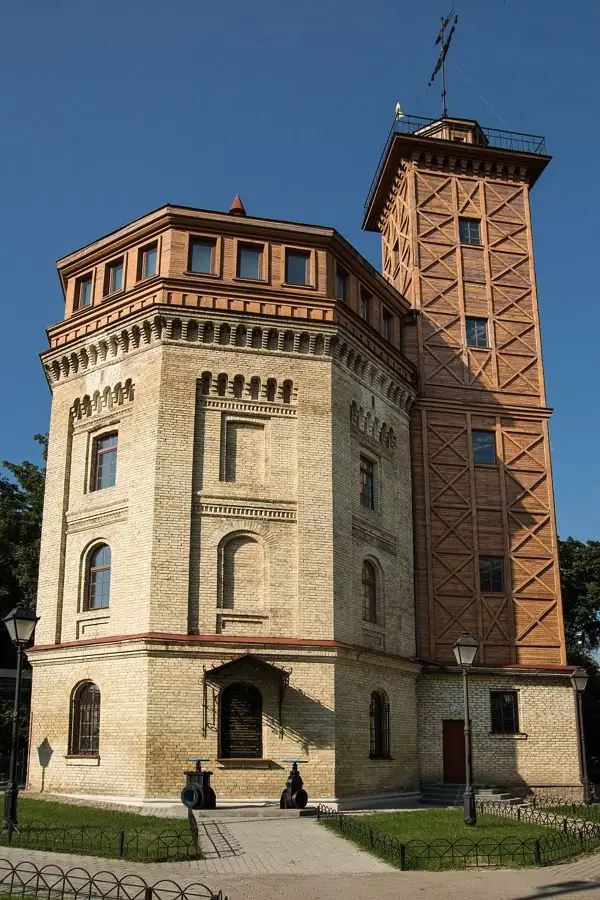
Київська башта 1875–1876 рр. — частина першого міського водогону, відкритого 1 березня 1872 р.; її історія детально викладена в розділі 08. Сусідню башту 1871–1872 рр. розібрали в 1939–1940 рр. і відтворили 2003 р. [15, 51] D
Отже, найстаріша з наявних міських водонапірних башт України — київська башта 1876 р., хоча її нинішній вигляд є результатом реконструкції. Деякі популярні видання називають автором військового інженера Аманда Струве й датують башту 1871 р. [63]; ймовірно, тут змішано відомості про весь водогін та окремі споруди, тож питання потребує архівної перевірки.
Інші претенденти та орієнтири
| Об’єкт | Дата | Коментар |
|---|---|---|
| Залізнична вежа біля вокзалу, Дніпро | 1884 | Восьмигранна, 36 м; дані лише з вторинного джерела [52] D |
| Вежа Крайової виставки, Стрийський парк, Львів | 1894 | Ескіз Ю. Захаревича, проєкт М. Лужецького; суттєво змінена [16, 49] |
| Водонапірна вежа, Житомир | 1895–1898 | Архітектори А. Єнш і М. Лібрович; 31 м, два баки по 100 м³; пам’ятка місцевого значення з 1996 р. [17] |
| Вежа Шухова, Миколаїв | 1907 | Сталевий гіперболоїд із баком Інтце (розділ 07) [19, 49] |
Су терезі системи Киркчешме, Стамбул

Турецька традиція водонапірних веж особлива: це не резервуари на висоті, а регулювальні вежі гравітаційних водогонів. Через су терезі вода піднімалася до відкритого басейну, тиск у керамічних трубах обмежувався рівнем води в ньому, а калібровані отвори розподіляли воду між напрямками. [64] Найдосконалішою системою вважається водогін Киркчешме (див. також розділ 05), побудований Мімаром Сінаном за наказом Сулеймана Пишного в 1554–1564 рр.; за оцінкою енциклопедії TDV, це найважливіша інженерна споруда Сінана і найбільша за обсягом. [20, 32] B
Найраніші відомі су терезі описані в Едірне: у палаці на Сарайичі дослідники згадують «Терезі кьошк» близько 1530 р. [60] Серед датованих веж Стамбула — су терезі Саліхи Султан в Еюпі (1736) [60] і пізня Хамідіє су терезісі в Кягитхане (1899–1902) [65]. Загалом у Стамбулі зафіксовано 86 су терезі [66]. Точну дату найстарішої з них використані джерела не встановлюють, тому «найстаріший» тут — увесь тип XVI ст., а не окрема споруда.
Інші претенденти та орієнтири
Château d’eau, Тулуза
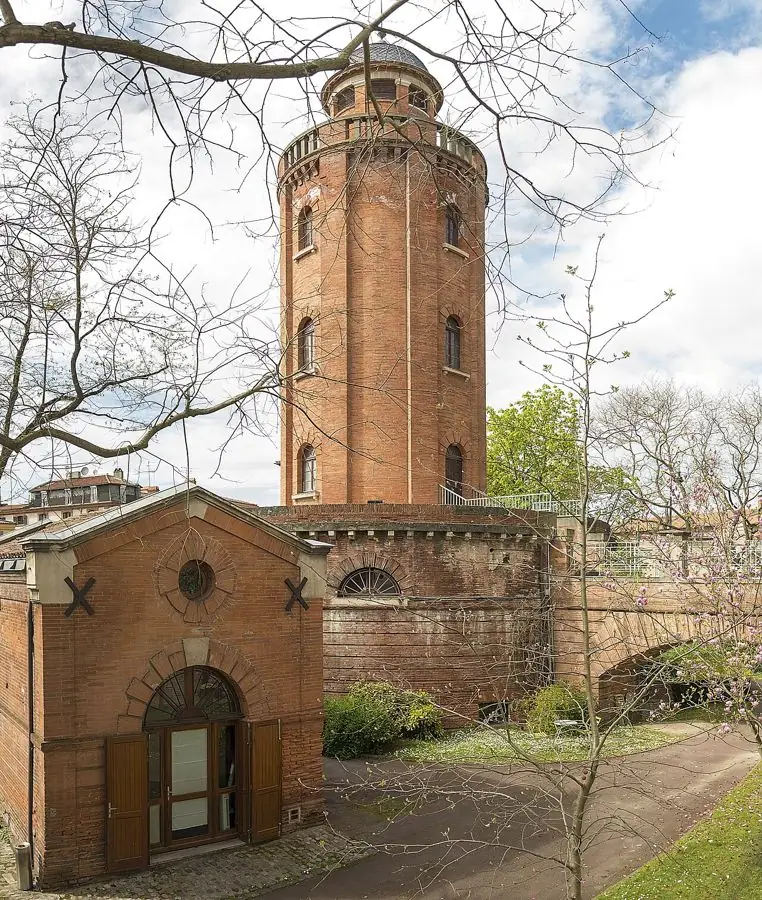
Тулузький château d’eau — один із найраніших у Франції прикладів справжньої водонапірної вежі: вода з фільтрувальної галереї піднімалася насосами в резервуар на вершині, звідки самопливом розходилася містом. Понад тридцять років вона забезпечувала тулузців чистою водою, доки фільтрувальна галерея не замулилась і місто не збудувало другу вежу на протилежному березі. [21] C
У французькій мові «château d’eau» означає будь-яку споруду-резервуар, тож старші об’єкти з цією назвою не завжди є вежами. Найвідоміший приклад — монументальний шестигранний château d’eau на променаді Пейру в Монпельє (будівництво з 1766 р., архітектор Жан-Антуан Жираль, завершено близько 1768), кінцевий розподільний вузол акведука Сен-Клеман. Він класифікований як пам’ятка в 1954 р. [67]
Інші претенденти та орієнтири
| Об’єкт | Дата | Коментар |
|---|---|---|
| Château d’eau du Peyrou, Монпельє | 1766–1768 | Розподільний павільйон акведука, не висока вежа; MH [67] |
| Château d’eau de Montmartre, Париж | 1835 | Восьмигранна вежа з резервуаром; надбудована в 1865 р., надбудову розібрано в 1927 р. [68] |
| Вежі-резервуари Версаля (rue des Réservoirs) | з 1665 | Паркова гідравліка; дані вторинні [69] D |
Водонапірна вежа абатства Ролдюк, Керкраде
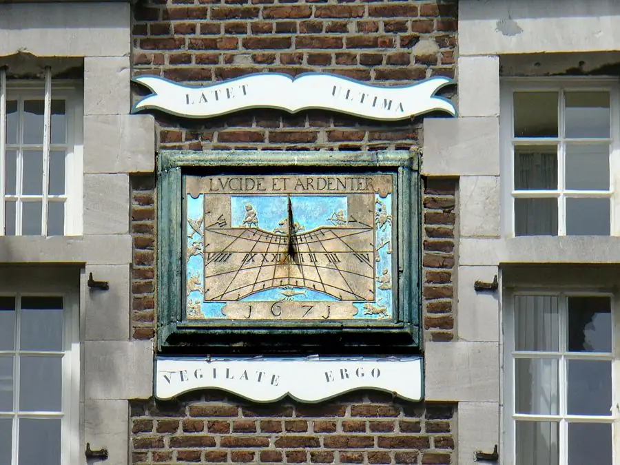
Державний набір даних «Watertorens» (на основі інвентаризації watertorens.eu) налічує 306 відомих збережених водонапірних веж Нідерландів і вказує, що найстаріша з них датується 1671 р. [37] Цей рік відповідає колишній водонапірній вежі абатства Ролдюк: в описі рейксмонумента названо абатське крило 1671 р. і «колишню водонапірну вежу, також 1671 р.» із сонячним годинником. [36] C
Інші джерела називають найстарішою нідерландською водонапірною вежею вежу палацу Сустдейк (1680), а найстарішою вежею централізованого питного водопостачання — вежу в Ден-Гелдері (1856). [70] Вежу 1856 р. у 1908 р. замінила нова, тож серед збережених міських веж одна з найстаріших — Watertoren у районі Де-Есх у Роттердамі (1871–1873, архітектор К. Б. ван дер Так, 48 м, рейксмонумент з 1981 р.). [71, 72]
Водяна вежа (Wieża Wodna), Фромборк

Вежу збудували в 1571 р., використавши нижні частини стін давнішого млина. Всередині встановили водопідйомний пристрій, що діяв від водяного колеса, і розподільчий бак, з якого вода самопливом ішла трубами з видовбаних дубових стовбурів до будинків на Соборному пагорбі. Національний інститут спадщини Польщі називає її першою спорудою такого типу на польських землях і другою в Європі. [10] C
Систему ремонтували в 1630 р. і на початку XVIII ст. Водогін закрили в 1778 р., механізми розібрали в середині XIX ст., а саму вежу відновили в 1964 р. [73] Тобто збереглася архітектурна оболонка, а не первісна механіка. Порівняння з Аугсбургом («друга після Аугсбурга, 1548») — усталена місцева формула; з огляду на ширшу європейську історію (Аугсбург від 1416 р., Толедо 1569; див. розділ 05) її варто вживати обережно. [5]
Vattenborgen («Водяний замок»), Карлскруна

Карлскруна стала третім містом Швеції з водогоном (1864). До його складу входив високий резервуар на центральній площі — Vattenborgen, збудований військовим флотом у 1861–1863 рр. Він розв’язав 150-річну проблему міста, яке досі жило з 146 колодязів і привізної води. [77, 78] C
Vattenborgen — радше високий резервуар у вигляді фортеці, ніж висока вежа. Серед «класичних» шведських веж однією з перших була вежа Кірсеберг у Мальме (1879, 27 м) — перша вежа міста; у 1916 р. її перебудували на житло. [79]
Wasserturm Schanzengraben, Цюрих

Вежа не входила до міських укріплень. У 1720-х у кварталі Талакер почалося активне будівництво, а громадського водопостачання ще не було, тож власники будинків звели вежу з водяним колесом і резервуаром для власного приватного водогону. [39] D Це один із найраніших збережених у Швейцарії прикладів справжньої водонапірної вежі.
Інші орієнтири
Примітка: у гірській Швейцарії більшість резервуарів розміщували під землею на висотах, тому водонапірних веж тут порівняно мало. [83]
Водонапірна вежа станції Скоттеруд
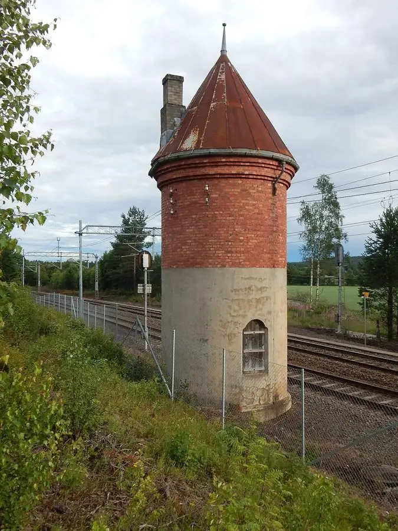
Вежа при станції Скоттеруд (1889) вважається найстарішою збереженою водонапірною вежею Норвегії; вона охороняється державою, а в 2024 р. пройшла антикварну реставрацію через природне старіння, морозні пошкодження та брак обслуговування. [23, 84] D
Норвезькі станційні вежі зазвичай мали два-три поверхи, бак нагорі та піч на першому поверсі. Найстаріші дерев’яні вежі не збереглися, а більшість мурованих знесли після кінця парової тяги в 1960-х. [85] В одному з джерел найстарішою названо також вежу станції Б’єркеланген, але її датування невизначене (ймовірно, близько 1896 р.). [85]
Башта в Малій Вільшанці: встановлене і невстановлене
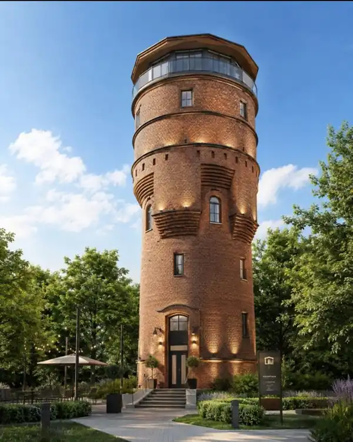
Що встановлено
- Місцезнаходження. Село Мала Вільшанка — адміністративний центр Маловільшанської громади Білоцерківського району Київської області. [87]
- Тип і матеріал. Окремо розташована цегляна башта циліндричного об’єму; за даними IMWT, орієнтовна висота — близько 15 м, усередині — чотири рівні.
- Стан (за натурною фотофіксацією IMWT, 2026). Пошкоджена покрівля; зотлілі дерев’яні перекриття; руйнування цегляної кладки з вимиванням розчину; знищені віконні й дверні заповнення; щільне заростання прилеглої території.
- Правовий статус. Об’єкт перебуває у власності ТОВ «ФішМі»; відомостей про внесення до Державного реєстру нерухомих пам’яток України не виявлено.
Що не встановлено
- дата спорудження та етапи перебудов;
- автор проєкту, будівельна організація або типовий проєкт;
- первісний замовник і функція (садибна, залізнична, промислова чи колгоспна система водопостачання);
- тип і матеріал первісного резервуара, обладнання та джерело подачі води;
- час припинення водонапірної функції.
Типологічне місце
За зовнішніми ознаками — масивний цегляний стовбур із віконними прорізами по ярусах і верхнім резервуарним об’ємом — башта належить до широкої центрально- та східноєвропейської типології цегляних водонапірних башт кінця XIX — середини XX ст., технічною основою якої часто був металевий резервуар, що спирався на мурований стовбур (зокрема, за принципом Інтце). [13] Це твердження має характер типологічної гіпотези, а не датування: подібні цегляні башти споруджувалися як у дорадянський, так і в радянський період, а з середини XX ст. в сільській місцевості їх витісняли уніфіковані сталеві башти. [53]
Філософське осмислення: архітектура запасу
Філософська цінність водонапірної башти полягає в подвійному масштабі. Зовні вона — самостійний об’єкт, міська чи сільська домінанта; функціонально — вузол великої невидимої системи, яка поєднує джерело, механізм підняття, місткість, мережу, споживачів і правила керування ресурсом.
Від римської розподільчої башти до стамбульських «водяних терезів» і бака Інтце повторюється одна ідея: суспільство отримує стабільність завдяки інженерному передбаченню майбутньої потреби. У цьому сенсі водонапірна башта — архітектура запасу й довіри.
У сучасній інженерії подібні завдання — резервування, надійність, розподіл потоків, забезпечення пікового навантаження — виникають в електро-, теле- та цифрових мережах. Це сильна порівняльна модель, але не доведена пряма історична спадковість: там, де документальних зв’язків немає, порівняння слід розглядати як філософську аналогію.
Нарешті, історія водонапірних башт — це історія людей: механіків, яким місто обіцяло довічну ренту (Туріано), інженерів, що ризикували власним капіталом (Моріс), архітекторів, які вигравали конкурси у двадцять три роки (Гальмгубер), і безіменних будівельників тисяч сільських башт, чиї імена ще належить знайти.
Висновки
- Історія баштового водорозподілу надійно простежується щонайменше до римських Помпей кінця I ст. до н. е.; Вітрувій є важливим письмовим свідком принципів міського розподілу води, але не доказом першої висотної башти.
- Між античністю та XIX ст. існувала тяглість двох інженерних принципів — водопідйомного (Аугсбург, Фромборк, Толедо, Лондон) і регулювального (стамбульські su terazileri Мімара Сінана), які поєдналися в індустріальній водонапірній башті.
- Індустріальна доба перетворила башту на серійну типологію; вирішальними технічними інноваціями стали резервуар Отто Інтце та гіперболоїдна сітка Володимира Шухова, архітектурними — монументалізація (Луїсвілл, Чикаго, Маннгейм, Гамбург).
- У XX ст. архітектори відкрили резервуар як форму: експресіонізм Пельціга, оболонки Торрохи, «гриби» Ліндстрема, кувейтські вежі Малене Бйорн.
- Україна має власний значущий шар цієї історії — від київського водогону 1872 р. до шуховської башти Миколаєва 1907 р. — і водночас тисячі малодосліджених сільських башт.
- Воєнна історія башт вимагає суворої перевірки: епізоди Вуковара, Грудзьондза, Рошерата і Вінниці мають різні рівні доказовості.
- «Найстаріша башта у світі» — питання критеріїв, а не одного імені. Порівняння дев’яти країн показує: найстаріші збережені споруди з водонапірною функцією — су терезі Стамбула (з 1550-х), Фромборк (1571), Ролдюк (1671), Цюрих (1724) — належать до доіндустріальної традиції; міська башта в сучасному розумінні з’являється в Тулузі (1823–1825) і масово поширюється з 1850-х (Ормскірк, Карлскруна, Роттердам, Київ); у Норвегії найстаріша збережена башта — залізнична (1889).
- Майже в кожній країні формула «найстаріша башта» є дискусійною: результат залежить від того, чи враховують садибні, монастирські та залізничні споруди, і від повноти національного обліку. В Україні ранні залізничні й провінційні башти досліджено недостатньо, що обґрунтовує потребу в національному реєстрі водонапірних башт.
- Башта в Малій Вільшанці належить до широкої типології цегляних водонапірних башт кінця XIX — середини XX ст.; її дата, автор і первісна функція документально не встановлені.
Хронологічна таблиця
| Дата | Подія | Рівень | Джерело |
|---|---|---|---|
| VIII ст. до н. е. | Водовід і басейн царя Єзекії в Єрусалимі (текстова традиція) | A (текст) | [27] |
| I ст. до н. е. | Вітрувій описує поділ міського водопотоку на три напрями | A | [25] |
| бл. 20–10 до н. е. | Спорудження більшості вторинних водонапірних башт Помпей | B | [3] |
| бл. 40–60 н. е. | Акведук Німа з Пон-дю-Гар і castellum divisorium | B | [24] |
| 63 н. е. | Землетрус у Помпеях; частину башт відновлено | B | [3] |
| XI ст. | Ступінчастий колодязь Рані-кі-Вав, Патан | C | [30] |
| 1416 | Дерев’яний попередник Великої башти Аугсбурга (майстер Ганс Фельбер) | C | [5, 31] |
| 1463 | Кам’яна перебудова Великої башти, Аугсбург | C | [5] |
| 1554–1564 | Система Киркчешме Мімара Сінана, Стамбул | B–C | [9, 20, 32] |
| 1565–1569 | Перший «Artificio» Хуанело Туріано, Толедо | B–C | [12, 33] |
| 1571 | Водяна вежа у Фромборку з черпаковим водопідйомником В. Генделя | C | [10] |
| 24.12.1582 | Перша вода з коліс Пітера Моріса під Лондонським мостом | C | [11] |
| 1656 | Гідротехнічна споруда на малюнку облоги Грудзьондза | B | [35] |
| 1666 | Велика лондонська пожежа знищує колеса Моріса (згодом відбудовані) | C | [11] |
| 1669 | Підвищення Великої башти Аугсбурга | C | [5] |
| 1671 | Водонапірна вежа абатства Ролдюк, Керкраде (Нідерланди) | C | [36, 37] |
| 1724 | Вежа з водяним колесом і резервуаром на Шанценграбені, Цюрих | D | [39] |
| 1766–1768 | Château d’eau на променаді Пейру, Монпельє (арх. Ж.-А. Жираль) | C | [67] |
| 1822 | Демонтаж водопідйомних коліс Лондонського мосту | C | [11] |
| 1823–1825 | Château d’eau у Тулузі (арх. Ж.-А. Рейно) | C | [21] |
| 1853–1854 | Tower Hill Water Tower, Ормскірк | D | [22] |
| 16.10.1860 | Відкриття Louisville Water Tower (Т. Скоуден, Ч. Германі) | C | [41, 43] |
| 1861–1863 | Vattenborgen, Карлскруна (арх. Ф. В. Лейонанкер) | C | [77] |
| 1866–1871 | Водонапірна башта Na Grobli, Вроцлав (арх. К. Й. К. Ціммерманн) | D | [75] |
| 1869 | Chicago Water Tower (В. Бойнгтон) | C | [44] |
| 1871 | Башта Чикаго вціліла у Великій пожежі | C | [45] |
| 1871–1873 | Watertoren у районі Де-Есх, Роттердам (арх. К. Б. ван дер Так) | D | [71] |
| 01.03.1872 | Відкриття першого водогону Києва; башти О. Шіле (1871–72, 1875–76) | D | [15] |
| 1879 | Припинення роботи історичного комплексу башт Аугсбурга | C | [5] |
| 1879 | Kirsebergs vattentorn — перша башта Мальме | C | [79] |
| 1880-ті | Резервуар Отто Інтце; масове застосування бл. 1885–1905 | C–D | [13] |
| 1884 | Залізнична водонапірна башта біля вокзалу, Дніпро | D | [52] |
| 1886–1889 | Башта Маннгейма (Г. Гальмгубер) | C | [46] |
| 1889 | Водонапірна башта станції Скоттеруд — найстаріша збережена в Норвегії | D | [23] |
| 1890 | Торнадо руйнує башту Луїсвілла; відбудова | C | [41, 42] |
| 1894 | Башта Галицької крайової виставки, Львів (Ю. Захаревич, М. Лужецький) | D | [16] |
| 1895–1898 | Водонапірна башта Житомира (А. Єнш, М. Лібрович) | D | [17] |
| 1896–1897 | Башта «Ромео і Джульєтта» Ф. Л. Райта | C | [48] |
| 1896 | Одна з перших гіперболоїдних водонапірних башт В. Шухова — Лисичанськ | B | [14] |
| 1907 | Гіперболоїдна башта Шухова з баком Інтце, Миколаїв | D | [19] |
| 1907–1910 | Башта Штерншанце, Гамбург (В. Шварц) — найбільша в Європі | D | [47] |
| 1911 | Верхньосілезька вежа в Познані (Г. Пельціг) | B | [55] |
| 1911–1912 | Водонапірна башта Вінниці (Г. Артинов) | B–D | [18] |
| 1912 | Гіперболоїдна башта Шухова в Харкові | B | [14] |
| 1914 | Гіперболоїдна башта Шухова в Черкасах | D | [49] |
| 1936 | Уніфікована сталева башта О. Рожновського (за довідковими даними) | D | [53] |
| 1941 | Резервуарна башта іподрому Сарсуела (Е. Торроха) | B | [50] |
| 1956 | Водонапірна башта у Федалі, Марокко (Е. Торроха) | C | [50] |
| 1958 | «Свампен», Еребру (С. Ліндстрем, П. Кюль) | D | [56] |
| 1963–1968 | Башта Вуковара (П. Кушан, С. Колобов) | C | [57] |
| 1976 / 1979 | 31 «гриб» Кувейту; відкриття Kuwait Towers (М. Бйорн) | C | [56] |
| 1988 | Фотомонографія Бехерів «Wassertürme / Water Towers» | C | [59] |
| 1991 | Башта Вуковара: 640 прямих влучань | C | [57] |
| 2003 | Відкриття Музею води в київських баштах | D | [15] |
| 2007 | Башта Штерншанце відкривається як готель | D | [47] |
| 2019 | Система водного господарства Аугсбурга — у Списку ЮНЕСКО | C | [4] |
Біографічний покажчик архітекторів та інженерів
| Особа | Роки, країна | Роботи, пов’язані з водою | Значення для типології |
|---|---|---|---|
| Вітрувій | I ст. до н. е., Рим | «De architectura», кн. VIII | Найраніший письмовий опис принципів міського водорозподілу [25] |
| Ганс Фельбер | XV ст., Аугсбург | Дерев’яна водопідйомна башта 1416 р. | Початок найстарішого збереженого німецького комплексу [5] |
| Мімар Сінан | бл. 1490–1588, Османська імперія | Система Киркчешме (1554–1564), акведук Маглова, su terazileri | Регулювальна башта як елемент самопливної мережі [7–9] |
| Хуанело Туріано | бл. 1500/1511–1585, Італія / Іспанія | «Artificio de Juanelo», Толедо, 1569 і 1581 | Підйом води течією річки на ~90 м [12, 33] |
| Пітер Моріс | пом. 1588, Нідерланди / Англія | Колеса й насоси під Лондонським мостом, 1582 | Початок механічного водопостачання Лондона [11, 34] |
| Валентин Гендель | XVI ст., Вроцлав | Черпаковий водопідйомник водяної вежі у Фромборку, 1571–1572 | Механічний водопідйом на польських землях [10] |
| Абат ван дер Стеге | XVII ст., Ролдюк | Абатське крило і водонапірна вежа, 1671–1676 | Найстаріша збережена вежа Нідерландів [36] |
| Жан-Антуан Жираль | XVIII ст., Франція | Château d’eau на променаді Пейру, Монпельє, 1766–1768 | Монументальний розподільний павільйон акведука [67] |
| Жан-Антуан Рейно | XIX ст., Франція | Château d’eau, Тулуза, 1823–1825 | Рання міська вежа з насосами [21] |
| Фредрік Вільгельм Лейонанкер | XIX ст., Швеція | Vattenborgen, Карлскруна, 1861–1863 | Високий резервуар у формі замку [77] |
| Карл Йоганн Крістіан Ціммерманн | XIX ст., Вроцлав | Башта Na Grobli, 1866–1871 | Історицистська башта з повністю збереженими механізмами [75] |
| К. Б. ван дер Так | XIX ст., Нідерланди | Watertoren, Роттердам, 1871–1873 | Одна з найстаріших збережених міських веж Нідерландів [71] |
| Арнольд Єнш, Мечислав Лібрович | XIX ст., Житомир | Водонапірна башта Житомира, 1895–1898 | Башта-регулятор і пожежна каланча [17] |
| Теодор Р. Скоуден, Чарльз Германі | 1815–1881; США | Louisville Water Tower і насосна станція, 1860 | Монументалізація інженерної інфраструктури [43] |
| Вільям В. Бойнгтон | 1818–1898, США | Chicago Water Tower, 1869 | Башта-символ після катастрофи [44, 45] |
| Олександр (Адріан) Шіле | XIX ст., Київ | Башти першого київського водогону, 1871–1876 | Початок централізованого водопостачання Києва [15] |
| Отто Інтце | 1843–1904, Німеччина | Резервуар Інтце I/II; також гравітаційні греблі | Стандарт резервуара для цегляних башт [13] |
| Густав Гальмгубер | 1862–1936, Німеччина | Башта Маннгейма, 1886–1889 | Башта як центр міської площі [46] |
| Юліан Захаревич, Міхал Лужецький | XIX ст., Львів | Башта Крайової виставки, 1894 | Виставкова башта у стилі історизму [16] |
| Володимир Шухов | 1853–1939 | Гіперболоїдні башти: Лисичанськ 1896, Миколаїв 1907, Харків 1912, Черкаси 1914 | Нова конструктивна система [14, 19, 49] |
| Френк Ллойд Райт | 1867–1959, США | Башта «Ромео і Джульєтта», 1896–1897 | Водопідйомна башта як ранній експеримент модернізму [48] |
| Вільгельм Шварц | XX ст., Гамбург | Башта Штерншанце, 1907–1910 | Найбільша башта Європи свого часу [47] |
| Ганс Пельціг | 1869–1936, Німеччина | Верхньосілезька вежа, Познань, 1911 | Експресіонізм в інженерній архітектурі [55] |
| Григорій Артинов | XX ст., Вінниця | Водонапірна башта Вінниці, 1911–1912 | Башта-символ міста [18] |
| Едуардо Торроха | 1899–1961, Іспанія | Сарсуела (1941), Федала (1956) | Оболонки й армована цегла [50] |
| Суне Ліндстрем | 1906–1989, Швеція | «Свампен» (1958), башти Кувейту (1976) | «Грибоподібна» залізобетонна башта [56] |
| Малене Бйорн | XX ст., Данія | Kuwait Towers, 1979 | Башта як національний символ [56] |
| Петар Кушан, Сергей Колобов | XX ст., Хорватія | Башта Вуковара, 1963–1968 | Башта-меморіал [57] |
| Бернд і Гілла Бехер | 1931–2007; 1934–2015, Німеччина | «Wassertürme / Water Towers», 1988 | Візуальна типологія башт [59] |
Бібліографія та джерела
Джерела пронумеровано в порядку першого посилання в тексті. Після кожного джерела зазначено рівень доказовості: A першоджерело; B рецензоване наукове чи енциклопедичне видання; C офіційний реєстр спадщини, державний, муніципальний чи музейний орган; D вторинне довідкове, туристичне чи медійне джерело. Назви джерел клікабельні; доступність зовнішніх URL залежить від їхніх власників.
[1] Olsson R. (2015). The water-supply system in Roman Pompeii. Lund University. B
[2] Olsson R. (2024). Water quantities for public and private use in Pompeii. Water History. B
[3] Operational modal analysis for the characterization of ancient water towers in Pompeii (2017). Procedia Engineering. B
[4] UNESCO. Water Management System of Augsburg, World Heritage Site 1580. C
[5] Waterworks at Rotes Tor — офіційний портал водної системи Аугсбурга. C
[6] UNESCO. Nomination file: Water Management System of Augsburg, порівняльний огляд. C
[7] Karakuş F., Urak Z. G., Özcan Z. (2018). The Case of the Kırkçeşme Water System. DergiPark. B
[8] Karakuş F. İstanbul’daki Osmanlı Dönemi Tarihi Su Sistemleri’nin İncelenmesi. Türk Hidrolik Dergisi, 3(1). B
[9] Turkish Cultural Foundation. Water Supply Systems: Aqueducts Built in Istanbul; Çeçen K. (1992). Sinan’s Water Supply System in İstanbul. İSKİ. D
[10] Narodowy Instytut Dziedzictwa. Frombork — Wieża wodna (Zabytek.pl). zabytek.pl C
[11] London Metropolitan Archives. London Bridge Waterworks Company; Corporate records (ACC 2558/LB/01). C
[12] Fundación Juanelo Turriano. Chronological notes on Juanelo Turriano. C
[13] Intze principle (вторинне); дослідження архітектури водонапірних башт Риги: CAS catalogue record; Erinnerung an Otto Intze (1843–1904). Bautechnik 70(10), 1993. D
[14] Beckh M. (2015). Hyperbolic Structures: Shukhov’s Lattice Towers. Wiley; Structurae: Vladimir Shukhov. B
[15] Kyiv Post. Curiosities of Kyiv: Museum of Water; Kyiv Water Museum (вторинне). D
[16] ZAXID.NET. Водогінну вежу у Стрийському парку визнали пам’яткою архітектури; КРАЙ: Архітектура Стрийського парку: спадщина Крайової виставки. D
[17] Водонапірна вежа (Житомир). uk.wikipedia.org; Туристично-інформаційний центр Житомира: tic.zt.ua D
[18] Матеріали конференції ВНТУ (2017). Вінницька вежа; Vinnytsia water tower (вторинне). B
[19] Shukhov Water Tower, Mykolaiv (довідкове); Телеграф: стан Шухівської вежі. D
[20] TDV İslâm Ansiklopedisi. Kırkçeşme Suları. islamansiklopedisi.org.tr/kirkcesme-sulari B
[21] Monumentum. Château d’eau et station de pompage à Toulouse (PA00094504). monumentum.fr C
[22] Tower Hill Water Tower (довідка з посиланням на Historic England, List entry 1197069). en.wikipedia.org/wiki/Tower_Hill_Water_Tower D
[23] Oslo Murmester. Vanntårnet ved Skotterud stasjon. oslomurmester.no D
[24] Ortloff C. R. (2021). Roman Hydraulic Engineering: The Pont du Gard Aqueduct and Nemausus (Nîmes) Castellum. Water, 13(1), 54; Structurae: Pont du Gard. B
[25] Vitruvius. De architectura, VIII.6 (латинський оригінал). A
[26] Vitruvius. On Architecture, VIII.6 (англійський переклад). A
[27] Bible Gateway. 2 Kings 20:20; 2 Chronicles 32:30. A
[28] Bible Gateway. Isaiah 22:9–11; Nehemiah 3:15–16. A
[29] Quranic Arabic Corpus. Сура 28:38. A
[30] UNESCO. Rani-ki-Vav, Patan, Gujarat. C
[31] Stadt Augsburg. Tag des offenen Denkmals 2017. C
[32] Su yolları ve su-yolcu esnafına dair bazı tespitler. Ankara Üniversitesi. bultenler.ankara.edu.tr B
[33] Bautista E., Muñoz J., Echávarri J. (2010). Juanelo (1501–1585). In: Distinguished Figures in Mechanism and Machine Science. Springer. B
[34] London Bridge during the Tudor period; Grace’s Guide: Peter Morris (вторинне). D
[35] Urban water supply infrastructure in Grudziądz. Water History (2021). B
[36] Bouwhistorische opname schoolvleugel abdij Rolduc (rijksmonument 513727). Officiële overheidspublicaties. officiele-overheidspublicaties.nl; KuLaDig: kuladig.de C
[37] data.overheid.nl. Dataset «Watertorens» (306 bestaande watertorens; oudste uit 1671). data.overheid.nl C
[38] Historic England. Old Water Tower, Aske Park. List entry 1318353. historicengland.org.uk/…/1318353 C
[39] Wasserturm Schanzengraben. de.wikipedia.org D
[40] Historic England. Historic Railway Buildings and Structures, vol. 2. C
[41] Louisville Water Company. History of Louisville Water Tower. C
[42] Louisville Water Company. A Timeline of 160 Years of History. C
[43] SAH Archipedia. Louisville Water Company Pumping Station. B
[44] Library of Congress, HABS. Chicago Water Tower, 800 North Michigan Avenue. C
[45] Chicago Architecture Center. Chicago Water Tower. C
[46] MARCHIVUM Mannheim. Der Wasserturm; меморіальна табличка: Mannheimer Wasserturm; Mannheim Water Tower (вторинне). C
[47] Mövenpick Hotels & Resorts (2007). Hotel in Historic Converted Water Tower Built in 1910; ULI. Hotel Wasserturm case study; Baunetz Wissen. D
[48] Romeo and Juliet Windmill (вторинне); Wisconsin Historical Society: Property Record. D
[49] Водогінні вежі: конструкції для подачі води, пам’ятки архітектури (Львів 1894, Миколаїв 1907). ua.trip-impressions.com D
[50] Instituto Eduardo Torroja (CSIC). Water Tower at Fedala, 1956; Eduardo Torroja and «Cerámica Armada». C
[51] Kyiv Post. Цікаві місця Києва: Музей води. kyivpost.com/uk/post/21922 D
[52] Rest.guru. Стара водонапірна вежа, Дніпро. rest.guru.ua D
[53] Водонапірна башта Рожновського (довідкове). D
[54] Антоненко І. В. Прийоми ревіталізації інженерних споруд України на основі водонапірних веж. КНУТД. B
[55] Poelzig, Hans. A Dictionary of Architecture; Hans Poelzig (AustriaWiki); A Tower of Tangled Histories: The Upper Silesia Tower in Poznań (Cambridge University Press, 2020). B
[56] Aga Khan Development Network. Water Towers, Kuwait City; Archnet: Sune Lindström; Kuwait Water Towers (вторинне); Svampen: Waymarking (за sv.wikipedia, рівень D); Gulf News: Kuwait Towers. C
[57] Vukovar Water Tower — офіційний меморіал. C
[58] Europe Remembers. Water Tower Observation Post, Rocherath. D
[59] Becher B., Becher H. (1988). Water Towers. MIT Press / Schirmer/Mosel; MoMA: Water Towers (1988). C
[60] Cantay T. Türk şehirciliğinin önemli yapıları: su terazileri. Erdem. erdem.gov.tr/tam-metin-pdf/451/tur B
[61] Historic England. Water Tower, Main Street, Leiston. List entry 1287645. historicengland.org.uk/…/1287645 C
[62] The Victorian Society. Jumbo Water Tower, Colchester. victoriansociety.org.uk D
[63] Tochka.net. 5 найцікавіших і старих водонапірних веж України. travel.tochka.net D
[64] Radboud University. Istanbul water: installation type «Water tower (Su terazi)». istanbul-su.rich.ru.nl B
[65] CNN Türk. Tarihi «Hamidiye Su Terazisi» restore edilecek. cnnturk.com D
[66] Hürriyet (06.04.2021). Esenler’de binalar arasında kalan tarih. hurriyet.com.tr D
[67] Monumentum. Ensemble de la promenade du Peyrou (PA00103609). monumentum.fr; Lonely Planet France. Place royale du Peyrou. lonelyplanet.fr C
[68] Fontaine du Château d’eau de Montmartre. fr.wikipedia.org D
[69] La Gazette du Château d’Eau. chateauxdeau.com D
[70] Van Kempen P. Te koop: ongemakkelijke gebouwen. Watertorens. WUR, 2021. edepot.wur.nl/547448 D
[71] Rotterdam360. De Watertoren. rotterdam360.com D
[72] Den Helder: watertoren 1856 і nieuwe watertoren 1908. denhelder.online D
[73] Medieval Heritage. Frombork — Water Tower. medievalheritage.eu D
[74] Polska Zachwyca. Ciekawe wieże ciśnień w Polsce. polskazachwyca.pl D
[75] Wieża ciśnień Na Grobli. pl.wikipedia.org D
[76] Brzeg — wieża ciśnień. wiezacisnien.eu; Brzeg water tower: en.wikipedia.org D
[77] Länsstyrelsen Blekinge. Gamla vattentornet på Trossö. lansstyrelsen.se C
[78] Visit Karlskrona. Vattenborgen (The Water Castle). visitkarlskrona.se C
[79] Malmö stad. Kirsebergs vattentorn. malmo.se C
[80] Södra vattentornet, Örebro. en.wikipedia.org D
[81] Stadt Luzern. Luzern — Wasserturm. stadtluzern.ch C
[82] Kapellbrücke.com. Der Wasserturm ist ein spezielles Monument. kapellbruecke.com D
[83] Architektur Basel. Das Wasser aus dem Turm. architekturbasel.ch; Wasserturm Bruderholz: waymarking.com D
[84] Glomdalen. Landets eldste vanntårn restaureres. glomdalen.no D
[85] Runberg. Vanntårn ved jernbane. cargocollective.com D
[86] Kupi. Vålandstårnet, Stavanger. kupi.com D
[87] Mala Vilshanka rural hromada (вторинне, за даними decentralization.gov.ua). D
Джерела фотографій (Wikimedia Commons)
Ф1 Помпеї — Mary Harrsch, CC BY-SA 4.0. commons.wikimedia.org

Ф2 Аугсбург — Reinhard Paland / Regio Augsburg Tourismus GmbH, CC BY-SA 3.0 DE. commons.wikimedia.org

Ф3 Луїсвілл — w_lemay, CC BY-SA 2.0. commons.wikimedia.org

Ф4 Чикаго — Bernt Rostad, CC BY 2.0. commons.wikimedia.org

Ф5 Маннгейм — Achim Lammerts, CC BY-SA 4.0. commons.wikimedia.org
_by_Achim_Lammerts.jpg){kind=link}
Ф6 Гамбург — Jo.Fruechtnicht, CC BY-SA 3.0. commons.wikimedia.org

Ф7 Вісконсин («Ромео і Джульєтта») — Marco 2001, похідна робота Fox69, CC BY-SA 2.0. commons.wikimedia.org
.jpg){kind=link}
Ф8 Миколаїв — SNCH, CC BY-SA 4.0. commons.wikimedia.org

Ф9 Житомир — A-a Nov, CC BY-SA 4.0. commons.wikimedia.org
.jpg){kind=link}
Ф10 Вінниця — SnizhokAM, CC BY-SA 4.0. commons.wikimedia.org

Ф11 Еребру («Свампен») — Holger Ellgaard, CC BY-SA 3.0. commons.wikimedia.org

Ф12 Вуковар — anjči, CC BY 2.0. commons.wikimedia.org

Ф13 Ормскірк — PC78, CC BY-SA 4.0. commons.wikimedia.org

Ф14 Київ — Pedro J Pacheco, CC BY-SA 3.0. commons.wikimedia.org

Ф15 Стамбул — Canercangul, CC BY-SA 4.0. commons.wikimedia.org

Ф16 Тулуза — Didier Descouens, CC BY-SA 4.0. commons.wikimedia.org

Ф17 Ролдюк — Willy Leenders, суспільне надбання. commons.wikimedia.org

Ф18 Роттердам — Wikifrits, суспільне надбання. commons.wikimedia.org

Ф19 Фромборк — Polimerek, CC BY-SA 3.0. commons.wikimedia.org

Ф20 Карлскруна — LittleGun, суспільне надбання. commons.wikimedia.org

Ф21 Цюрих — Roland zh, CC BY-SA 3.0. commons.wikimedia.org

Ф22 Скоттеруд — Jan-Tore Egge, CC BY-SA 4.0. commons.wikimedia.org

Ф* Візуальна концепція майбутнього вигляду башти в Малій Вільшанці (обкладинка, розділ 13) — матеріали IMWT; не є фотофіксацією існуючого стану.
Фотографії використано відповідно до умов ліцензій Creative Commons (із зазначенням авторства; ліцензії BY-SA — на тих самих умовах) або як суспільне надбання. Тексти релігійних джерел наведено в переказі; історичні інтерпретації не замінюють археологічну чи текстологічну експертизу. Відомості про башту в Малій Вільшанці ґрунтуються на натурних матеріалах IMWT 2026 р. Оповідь від імені башти — літературний прийом видання.